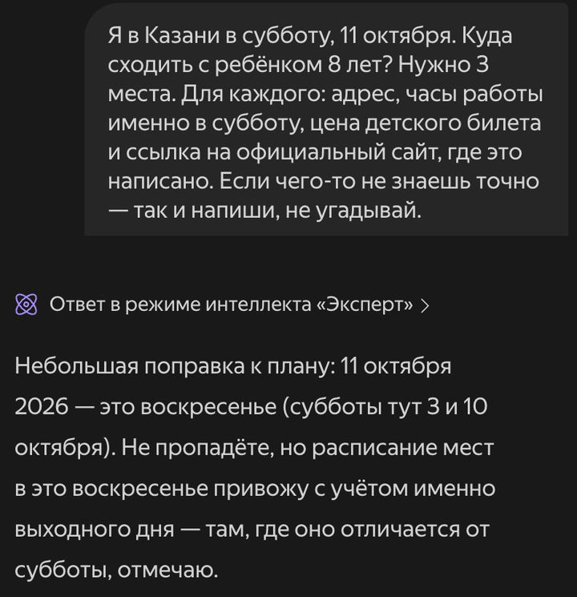
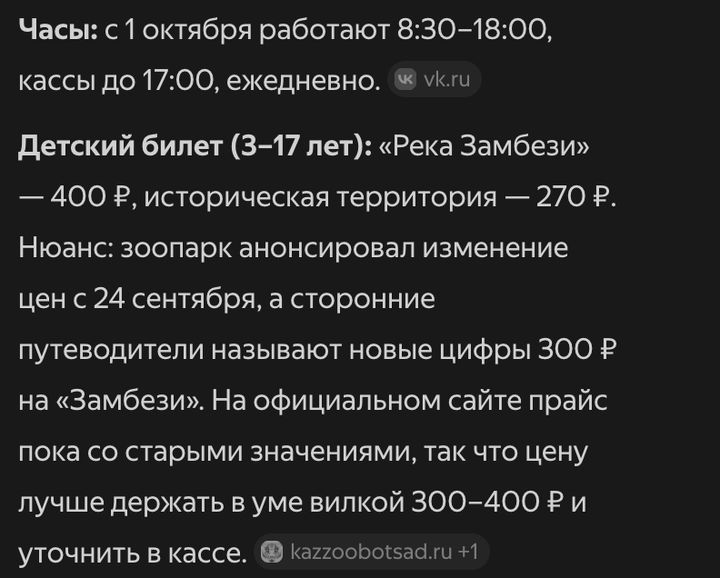
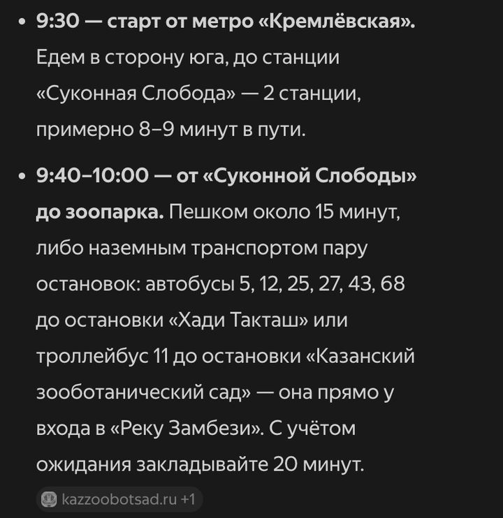

Бесплатные уроки · Алиса и Шедеврум
Получишь план дня с часами и ценами — и проверишь их за минуту.
Используй официальные сайты Яндекса: Алиса AI и Шедеврум входят по одному Яндекс ID.
Можно без входа: открой alice.yandex.ru и пиши сразу — так Алиса AI отвечала 3 октября 2026, со ссылками на источники. Без входа нельзя прикрепить файл, а кнопка «Новый чат» просит войти — новый разговор начнёшь с главной страницы. Чтобы чаты сохранялись — войди, как ниже.
Официальная справка о чате с Алисой AI
Куда сходить в выходные, во сколько закрывается касса, сколько стоит билет — тут Алиса AI сильна: она из Яндекса и знает города. В ответе будут адреса, часы, цены и ссылки на сайты, откуда это взято. За пять минут у тебя будет план дня. А учимся главному для таких планов: за минуту проверить по ссылкам то, из-за чего можно упереться в закрытую дверь.
Впиши свой город, день и с кем идёшь. В запросе три важные вещи: день недели вместе с датой, часы «именно в этот день» и ссылка на официальный сайт. Последняя фраза разрешает сказать «не знаю» — без неё нейросеть охотнее угадывает.
Я в [городе] в [день недели, дата]. Куда сходить с [ребёнком 8 лет]? Нужно 3 места. Для каждого: адрес, часы работы именно в этот день, цена детского билета и ссылка на официальный сайт, где это написано. Если чего-то не знаешь точно — так и напиши, не угадывай.
Мы спросили про Казань. Ответ пришёл меньше чем за минуту: зоопарк, аквапарк и Национальный музей — с адресами, часами и ценами. После каждого факта — серая плашка со ссылкой, у каждого места — карточка с картой и рейтингом. А первым абзацем — поправка:

Мы написали «в субботу, 11 октября», а это воскресенье. Ошибка настоящая, не учебная. Алиса её поймала, потому что в запросе были и день недели, и дата — одно проверило другое. И это не мелочь. В Национальном музее касса в субботу работает до 19:00, а в воскресенье — до 17:00. Детский билет в аквапарк на весь день в субботу, 10 октября, стоит 2 950 ₽, а в воскресенье, 11-го, — 2 750 ₽.
Серая плашка после факта — ссылка на страницу, откуда он взят. Нажми и найди на странице то же число. Проверять всё не нужно — только то, из-за чего можно упереться в закрытую дверь или не хватить денег:
Мы открыли все ссылки. Адреса, часы и цены совпали с официальными сайтами до рубля. Даже то, в чём засомневались мы: в Национальный музей до 18 лет вход и правда бесплатный — это есть в списке льгот на сайте музея. Но две вещи всё же нашлись.

Цена «вилкой». Про зоопарк Алиса написала: детский билет — 400 ₽, но путеводители называют 300 ₽, так что держи в уме 300–400. Мы открыли официальный сайт. В новостях от 23 сентября: цены меняются с 24 сентября, подробности — в разделе «Цены». А там детский — 400 ₽. Значит, нынешняя цена — 400 ₽. Когда источники спорят, решает сайт самого места. Для этого ссылки и нужны.
Реклама в конце. Под ответом была карточка с кнопкой «Перейти» и пометкой «Промо» — квест-экскурсия по Кремлю. Это реклама, а не часть ответа: ни часов, ни цены, ни официальной ссылки в ней нет. Во втором нашем ответе было так же.
Места выбраны — попроси маршрут в том же чате: Алиса помнит, о чём говорили. Пусть в конце сама проверит кассы:
Распиши маршрут на этот день: утром [место 1], потом обед, потом [место 2]. Начинаем в [время] от [откуда]. Сколько ехать между местами на общественном транспорте? В конце проверь каждое место: успеваем ли до закрытия кассы.
У нас пришёл план по времени: метро, зоопарк до 12:45, обед, музей с 14:50 — и таблица «успеваем ли до кассы». С кассами всё верно. Алиса даже написала, что «все переезды проверила по официальным данным». Но вот дорога:

Яндекс Карты считают этот путь пешком 28 минут — 2,1 км. С ребёнком выйдет дольше. Расстояние стояло и в самом ответе, в карточке зоопарка: «Суконная слобода, 2,1 км». Время в дороге нейросеть оценивает на глаз. Проверяй его в картах: построй маршрут от точки до точки.
И ещё одно. Алиса предупредила, что на странице контактов зоопарка часы до 19:00. Мы открыли — там до 18:00, как везде. Предупреждение лишнее, но безвредное: в план она всё равно взяла 18:00.
Спланируй ближайший выходной в своём городе: три места, потом маршрут на день. Идёшь без ребёнка — напиши «цена билета». У места, куда точно пойдёшь, проверь кассу и цену по ссылке.
Урок рассчитан на сайт alice.yandex.ru. Названия кнопок могут отличаться в приложении и после обновлений. Подписка на наше обучение не включает платные тарифы нейросетей.
Алиса AI — запросы урока проверены 3 октября 2026 без входа. Часы и цены сверены в тот же день по официальным сайтам зоопарка, музея и аквапарка, путь пешком — по Яндекс Картам. Снимки — ответы Алисы без правок, только обрезаны.
Следующий урок — «Документ: ответ с цитатой». Отличишь ответ из файла от ответа из головы нейросети.
Читать следующий урокКак войти и что ещё умеет Алиса и Шедеврум — разбор на сайте. Все нейросети, которые открываются из России, — на одной странице.